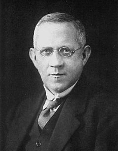

THOMAS MARTIN LOWRY

Introduction
Thomas Martin Lowry (26 October 1874 – 2 November 1936) was an English physical chemist best known for the Brønsted-Lowry acid-base theory, which, he developed independently from Johannes Nicolaus Brønsted.
About Lowry
Lowry was born in Low Moor, Bradford, West Yorkshire, England, in a Cornish family. He was the second son of the Reverend E. P. Lowry. He was educated at Kingswood School, Bath, Somerset, and then at the Central Technical College in South Kensington. During those years he realized that he wanted to be a chemist. He studied chemistry under Henry Edward Armstrong, an English chemist whose interests were primarily in organic chemistry but also included the nature of ions in aqueous solutions. From 1896 to 1913 Lowry was assistant to Armstrong, and between 1904 and 1913 worked as Lecturer in Chemistry at the Westminster Training College. In 1913, he was appointed head of the chemical department in Guy’s Hospital Medical and became the first teacher of chemistry in a Medical School to be made a University Professor, at the University of London. From 1920 till his death, Lowry served as the Chair of Physical Chemistry at the University of Cambridge.
Since the establishment of the Faraday Society in 1903, Lowry had been its active member and served as its President between 1928 and 1930. In 1914 he was elected a Fellow of the Royal Society. During and after the World War I, Lowry acted as Director of Shell-filling (1917–1919) and worked for the Trench Warfare Committee, Chemical Warfare Committee and Ordnance Committee. For this service, he was awarded the Order of the British Empire and the Order of Saints Maurice and Lazarus.
Lowry’s Work
In 1898, Lowry noted the change in optical rotation on nitro-d-camphor with time and invented the term mutarotational to describe this phenomenon. He studied changes in optical rotation caused by acid- and base-catalyzed reactions of camphor derivatives. This led in 1923 to his formulation of the protonic definition of acids and bases, now known as Brønsted–Lowry acid-base theory, independently of the work by Johannes Nicolaus Brønsted. Lowry published a few hundred papers and several books. His 1935 monograph on "Optical Rotatory Power" (1935) has long been regarded as a standard work on the subject.